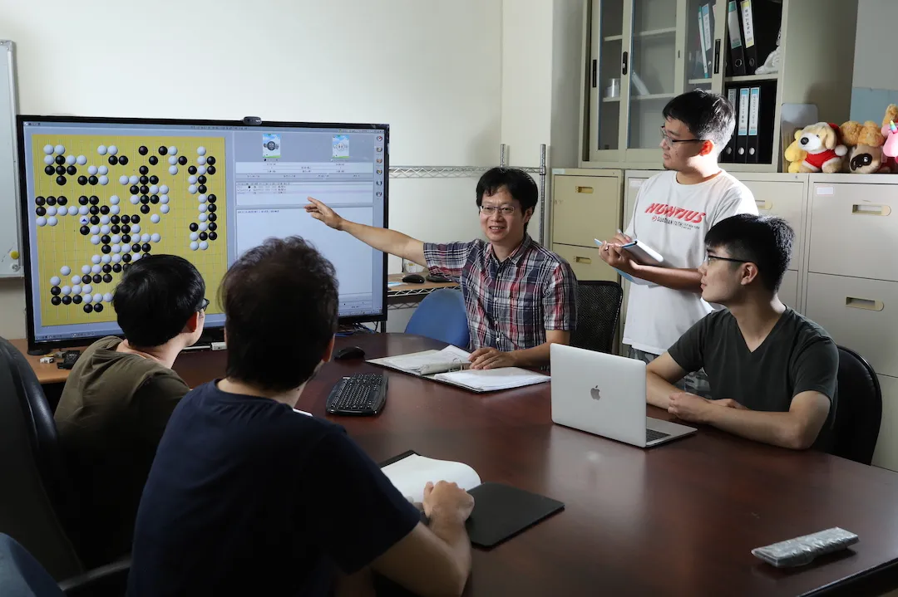
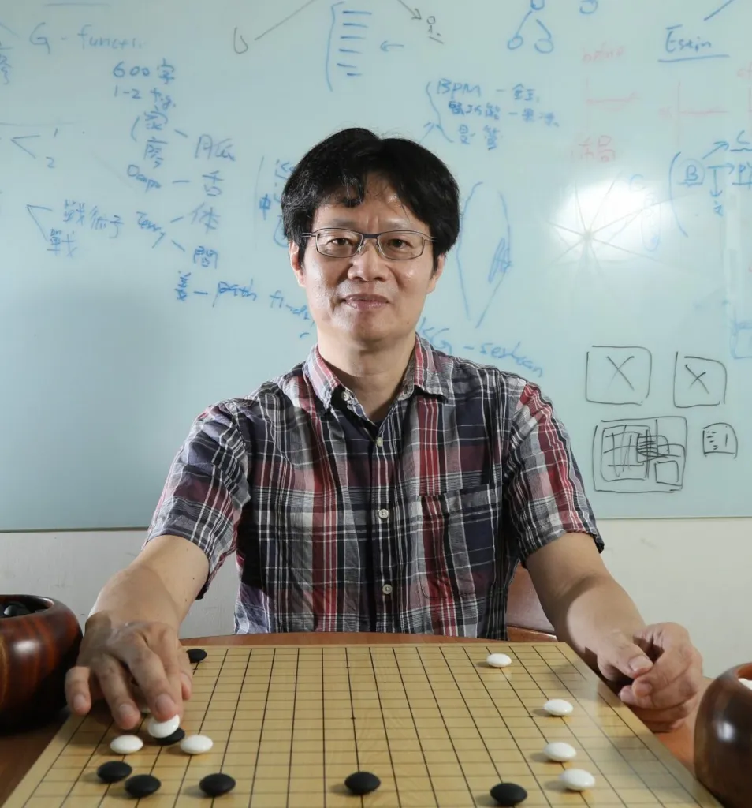

國立東華大學智慧科技中心
N.D.H.U. Smart Technology Center


近年來台灣投入大量資源發展 AI ，其中有相當大的一部分都是在發展智慧醫療，廣達創辦人林百里稱智慧醫療產業為台灣的「第二座護國神山」。中醫在台灣發展已久，水準在世界上名列前茅，華人世界看中醫，多數會認同臺灣的中醫醫療品質最為優秀。而全台中醫診所將近四千家，相當普及。但近年來臺灣看中醫的人數持續下降，原因之一是認為中醫診所不科學，步調緩慢。本計畫將嘗試以 AI 來幫助中醫診所的發展，並聯合多家中醫診所，建立智慧中醫科技聯盟，幫助中醫診所進行數位轉型。
智慧中醫科技聯盟成員包括東華教授與慈濟醫師，專任工程師、研究生與專題生，以及來自世界各國的外籍生等。我們團隊投入智慧醫療已經有相當長的一段時間，與慈濟醫院已經進行過三年的中醫計畫，發表多篇中醫論文，並且申請與通過九件中醫科技專利，對中醫產業相當瞭解，將可幫助中醫進行數位轉型。中醫因為不分科，適合偏鄉醫療巡迴看診，本計畫也將有助於東台灣醫療 AI 的發展，與幫助數位區域平衡，造福偏鄉醫療。
我們致力於推動產學合作，將人工智慧技術實際落地應用於中醫科技、綠能與智慧農業等領域，並積極招募各界企業夥伴加入聯盟，共同打造智慧科技的創新生態圈。

中心主持人
共同主持人
佛教慈濟大學 學士後中醫系
教授兼系主任
中心副主任 / 共同主持人
國立東華大學 電機工程學系
教授
共同主持人
國立東華大學 資訊管理學系
教授
共同主持人
花蓮慈濟醫院 中醫部
主治醫師兼中醫兒科主任
共同主持人
國立暨南國際大學 資訊工程學系
副教授
中心副主任 / 共同主持人
國立東華大學 資訊工程學系
助理教授
中醫顧問
漢廈中醫診所
中醫師兼院長
中醫顧問
漢華中醫診所
中醫師
專案經理
國立東華大學 資工系
系統工程師
國立東華大學 資工系
系統工程師 / 資料科學
國立東華大學 資工系
系統工程師
國立東華大學 資工系
本中心聚焦人工智慧與智慧醫療應用，將中醫診療、醫療影像與臨床照護流程結合資料化、模型分析與系統開發，推動醫療科技的實際落地。

中醫體質是人體的屬性，不同體質會對於某些疾病有著較高的敏感度。我們利用機器學習中，訓練快速且準確度高，分析模式也最接近人類直覺思考的決策樹，搭配中醫體質量表建造一個能快速且精確分析出病人體質的線上系統。

現今醫學以西醫為主流醫學，因為其有大量的科學研究數據來驗證，相對的中醫大多依靠經驗的傳承，其中又以四診（望、聞、問、切）中切診最具抽象化。因此將脈診其科學化數據化以產生更多研究數據是大家共同努力的目標。

舌診屬於四診中「望診」之重要項目，舌頭的狀況與臟腑有密切的聯繫，因此藉著觀察舌頭，即可知曉體內之狀態。對於現代中醫師而言，傳統醫師的判斷受當時醫師主觀意識、經驗以及當下環境因素影響缺乏客觀性，常有紀錄不實或紀錄不全之窘境，需要透過臨床經驗的長久累積與驗證，才能對病症做出精確的辨症。

心肌梗塞（STEMI）是一種經常急性發生，且必須及時正確治療的心血管疾病。過去 STEMI 的確診都需要由醫生判斷心電圖紀錄後方能確定，但過去研究指出，醫生經由心電圖發現 STEMI 的敏感度不及八成，因此我們開發了 AI Model 可以自動識別心電圖為 STEMI 的機率，並以熱力圖標示出判斷依據供醫生參考。

為幫助花蓮在地醫療發展，並協助花蓮慈濟醫院腎臟科數位轉型，我們開發血液透析作業時可用的電子白板系統，列出各床病人的生理狀態。減少醫護人員工作負擔，增加效率。並且將資料電子化後，可收集醫療大數據，進行精準醫療。